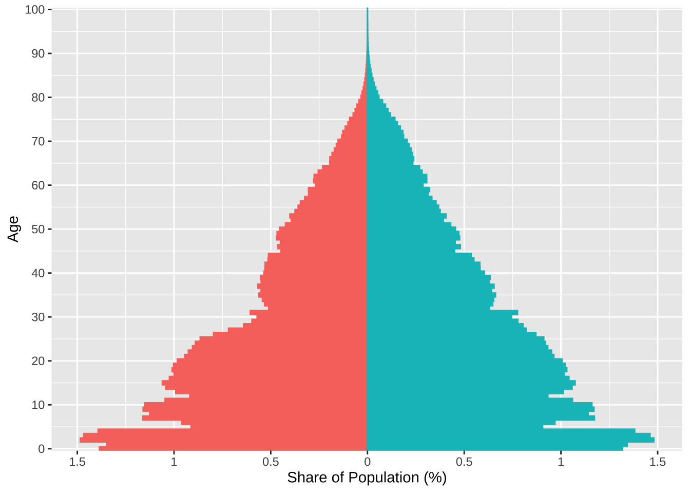
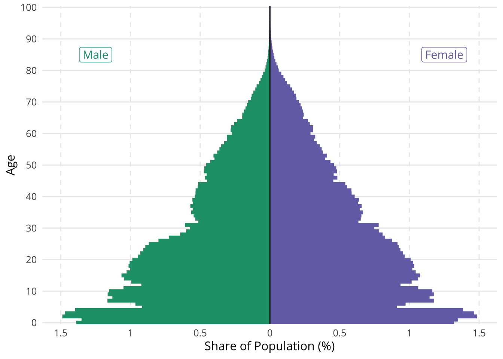
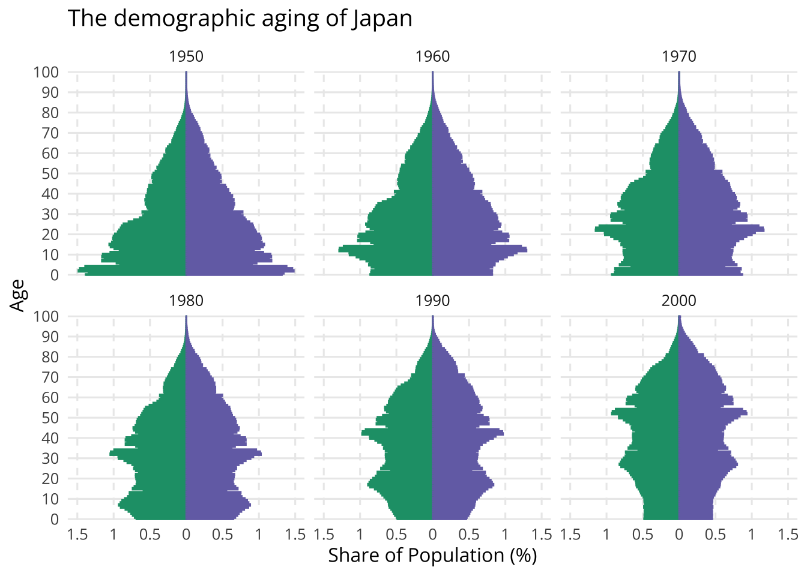
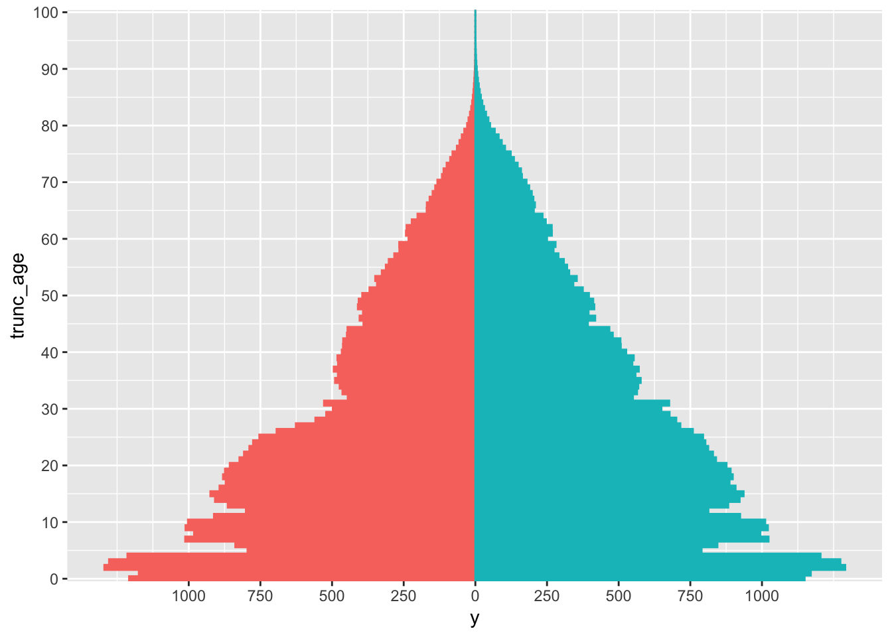
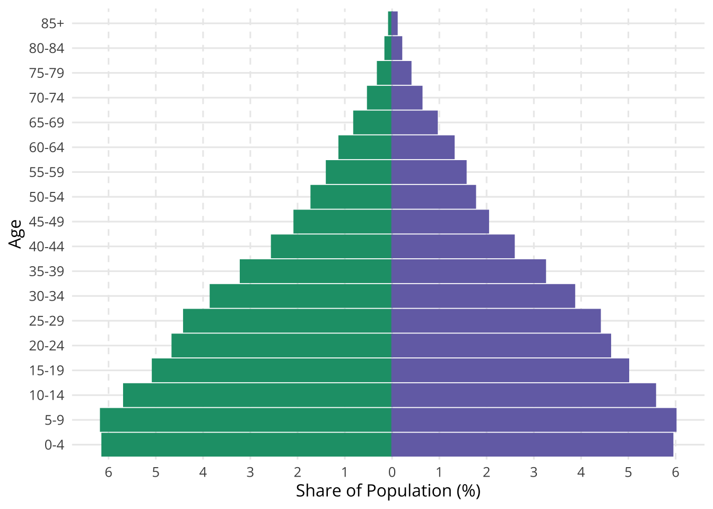
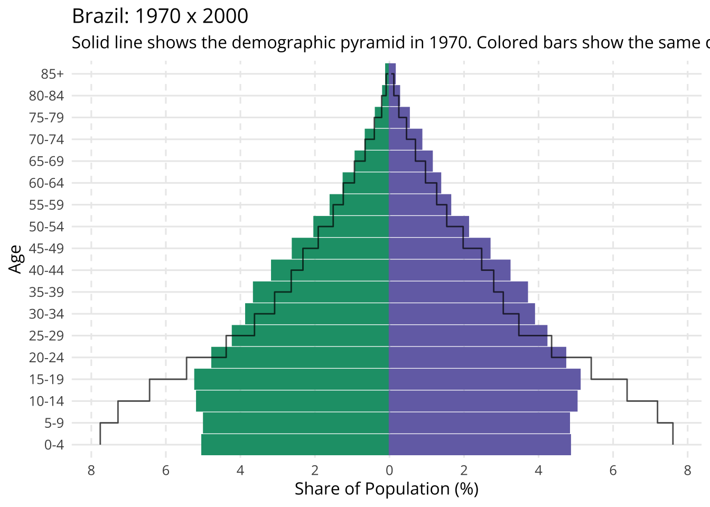
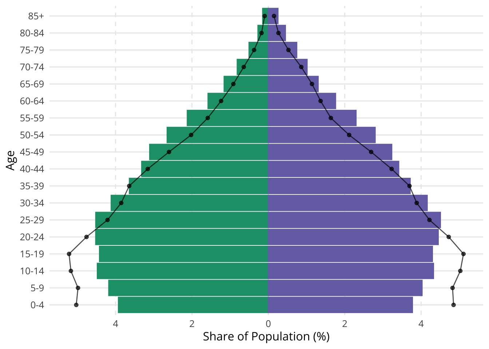
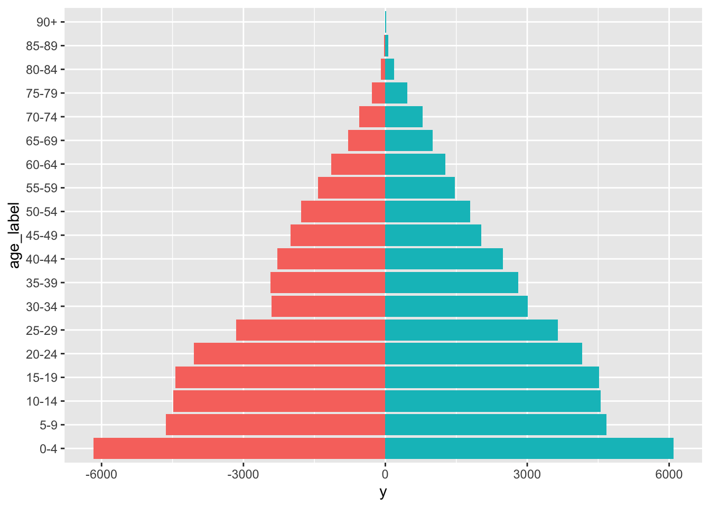

# Load the necessary packages
library(ggplot2)
library(dplyr)
library(tidyr)
library(stringr)
library(wpp2024)
library(showtext)
library(patchwork)
# Optional for better plotting
font_add_google("Open Sans", "Open Sans")
showtext_auto()
# to install wpp2024
# remotes::install_github("PPgp/wpp2024")Demographic Pyramids
A demographic pyramid is a graphical representation of the age and gender distribution of a population. It typically shows the population in horizontal bars, with males represented on the left and females on the right. Each bar represents a specific age group, and the length of the bar indicates the number of people in that group.
Demographic pyramids are widely used in demographic analysis to visualize the structure of a population, providing valuable insights into trends like population growth, aging, and gender distribution.
These pyramids are crucial for understanding the socio-economic dynamics of a country, as they highlight the proportions of young versus older populations and reveal patterns related to fertility rates, life expectancy, and migration.
By analyzing demographic pyramids, policymakers, businesses, and researchers can make informed decisions related to healthcare, education, and workforce planning.
In this tutorial, we will demonstrate how to create demographic pyramids using R, leveraging the United Nations World Population Prospects (WPP) 2024 dataset to analyze population structures in countries like Pakistan, Brazil, Japan, and Ireland. The data is available through their package on GitHub.
Simple age data
The simplest way that demographic data is presented is on a year-on-year basis. These estimates are available in the popAge1dt dataset.
data(popAge1dt)
# Brazil, Ireland, Pakistan, Japan
countries <- tibble(
country_code = c(392, 586, 372, 76),
name = c("Japan", "Pakistan", "Ireland", "Brazil")
)Preparing the data
A population pyramid follows certain conventions. The data is presented in age-sex groups: males on the left, females on the right. Bars typically represent each group’s share of total population, though sometimes they show shares within each sex separately.
The code below calculates population shares by age and sex, making male values negative to position them on the left side.
popage <- popAge1dt |>
filter(
country_code %in% countries$country_code,
year %in% seq(1950, 2020, 10)
)
popage <- popage |>
select(country_code, name, year, age, popM, popF) |>
pivot_longer(
cols = popM:popF,
names_to = "sex",
values_to = "population"
)
popage <- popage |>
mutate(
sex = if_else(sex == "popM", "Male", "Female"),
sex = factor(sex, levels = c("Male", "Female")),
) |>
group_by(country_code, name, year) |>
mutate(share = population / sum(population, na.rm = TRUE) * 100) |>
ungroup() |>
mutate(share = if_else(sex == "Male", -share, share))Minimal plot
The code below creates a basic population pyramid using Japan’s 1950 demographic data. Each bar shows what percentage of the total population belongs to a specific age group and sex combination. For example, a bar might show that 1% of Japan’s total population was males aged 10 years.
The visualization is called a “pyramid” because of its distinctive shape: wide at the bottom (many young people), gradually narrowing through the middle ages (fewer adults), and smallest at the top (very few elderly). This triangular shape was typical for most countries in the past and is still common in developing nations today. The shape reveals a population structure with high birth rates and shorter life expectancy.
jpn50 <- popage |>
filter(name == "Japan", year == 1950)
ggplot(jpn50, aes(x = age, y = share)) +
geom_col(aes(fill = sex, color = sex)) +
coord_flip() +
guides(fill = "none", color = "none") +
scale_x_continuous(
breaks = seq(0, 100, 10),
expand = c(0, 0)) +
scale_y_continuous(
breaks = seq(-1.5, 1.5, 0.5),
labels = c("1.5", "1", "0.5", "0", "0.5", "1", "1.5")
) +
labs(x = "Age", y = "Share of Population (%)")
Adding colors and text labels
The code below demonstrates how to enhance a population pyramid with colors and explanatory labels. These additions are essential as they make the visualization more informative and self-contained, allowing readers to understand the data without needing external explanations.
Regarding color choices for gender representation, modern data visualization practices avoid traditional stereotypes (like blue for males and pink for females). DataWrapper has an insightful discussion on this matter and recommends using green for men and purple for women.
Note that while these specific colors (green and purple) work well, there’s no strict rule - the key is to choose colors that are:
- Clearly distinguishable
- Accessible to colorblind viewers
- Consistent with your overall design scheme
- (Preferably) Free from gender stereotypes
colors <- c("#1B9E77", "#7570B3")
font <- "Open Sans"
p <- ggplot(jpn50, aes(x = age, y = share)) +
geom_col(aes(fill = sex, color = sex)) +
coord_flip() +
guides(fill = "none", color = "none") +
scale_x_continuous(
breaks = seq(0, 100, 10),
expand = c(0, 0)) +
scale_y_continuous(
breaks = seq(-1.5, 1.5, 0.5),
labels = c("1.5", "1", "0.5", "0", "0.5", "1", "1.5")
) +
labs(x = "Age", y = "Share of Population (%)")
p +
geom_hline(yintercept = 0) +
annotate(
"label",
x = 85,
y = -1.25,
label = "Male",
color = colors[1],
family = font,
size = 4
) +
annotate(
"label",
x = 85,
y = 1.25,
label = "Female",
color = colors[2],
family = font,
size = 4
) +
scale_color_manual(values = colors) +
scale_fill_manual(values = colors) +
theme_minimal(base_size = 12, base_family = font) +
theme(
panel.grid.minor = element_blank(),
panel.grid.major.x = element_line(linetype = 2)
)
Comparisons
The code below shows how to make interesting comparisions using small facet plots.
The first example shows how to see the demographic evolution of a single country over the years.
The second example shows how to compare a cross-country selection across the same time period.
jpn <- popage |>
filter(name == "Japan", year %in% seq(1950, 2000, 10))
base_plot <- ggplot(jpn, aes(x = age, y = share)) +
geom_col(aes(fill = sex, color = sex)) +
coord_flip() +
guides(fill = "none", color = "none") +
scale_x_continuous(
breaks = seq(0, 100, 10),
expand = c(0, 0)) +
scale_y_continuous(
breaks = seq(-1.5, 1.5, 0.5),
labels = c("1.5", "1", "0.5", "0", "0.5", "1", "1.5")
) +
labs(x = "Age", y = "Share of Population (%)") +
scale_color_manual(values = colors) +
scale_fill_manual(values = colors) +
theme_minimal(base_size = 12, base_family = font) +
theme(
panel.grid.minor = element_blank(),
panel.grid.major.x = element_line(linetype = 2)
)
base_plot +
facet_wrap(~year) +
ggtitle("The demographic aging of Japan")
country_comp50 <- popage |>
filter(year == 1980)
base_plot <- ggplot(country_comp50, aes(x = age, y = share)) +
geom_col(aes(fill = sex, color = sex)) +
coord_flip() +
guides(fill = "none", color = "none") +
scale_x_continuous(
breaks = seq(0, 100, 10),
expand = c(0, 0)) +
scale_y_continuous(
breaks = seq(-1.5, 1.5, 0.5),
labels = c("1.5", "1", "0.5", "0", "0.5", "1", "1.5")
) +
labs(x = "Age", y = "Share of Population (%)") +
scale_color_manual(values = colors) +
scale_fill_manual(values = colors) +
theme_minimal(base_size = 12, base_family = font) +
theme(
panel.grid.minor = element_blank(),
panel.grid.major.x = element_line(linetype = 2)
)
base_plot +
facet_wrap(~name) +
ggtitle("Country comparison: 1980")
Grouped age data
Demographers typically work with grouped age data (usually in 5 or 10-year intervals) rather than single-year ages for two main reasons:
Statistical Reliability: Grouped data provides more precise estimates by reducing random variations that can occur in single-year measurements.
Practical Analysis: Broader age groups make it easier to identify and understand demographic patterns and trends. For instance, knowing the proportion of people aged 65-69 is often more useful for policy planning than specific single-year counts.
This data is available in the popAge5dt dataset.
Some data manipulation is necessary since the age groups are interpreted as text/strings, and there is no obvious way to order this data. The code below converts this text data into a factor (a ordered string, 0-4, 5-9, …, 80-84, 85+).
data("popAge5dt")
popage <- popAge5dt |>
filter(country_code %in% countries$country_code) |>
mutate(
age_trunc = if_else(
age %in% c("85-89", "90-94", "95-99", "100+"), "85-", age
),
age_min = as.integer(str_extract(age_trunc, "[0-9]{1,2}(?=-)")),
age_trunc = str_replace(age_trunc, "85-", "85+"),
age_trunc = factor(age_trunc),
age_trunc = forcats::fct_reorder(age_trunc, age_min)
) |>
group_by(country_code, name, year, age_trunc) |>
summarise(
pop_male = sum(popM),
pop_female = sum(popF)
) |>
ungroup()
popage <- popage |>
select(country_code, name, year, age_trunc, pop_male, pop_female) |>
pivot_longer(
cols = starts_with("pop"),
names_to = "sex",
values_to = "population"
)
popage <- popage |>
mutate(
sex = if_else(sex == "pop_male", "Male", "Female"),
sex = factor(sex, levels = c("Male", "Female")),
) |>
group_by(country_code, name, year) |>
mutate(share = population / sum(population, na.rm = TRUE) * 100) |>
ungroup() |>
mutate(share = if_else(sex == "Male", -share, share))Simple plot
The code below shows how to make a simple plot following the conventions above. The data shows the demographic distribution of Brazil in 1990.
dat <- filter(popage, name == "Brazil", year == 1990)
breaks_share <- seq(-6, 6, 1)
labels_share <- str_remove(as.character(breaks_share), "-")
ggplot(dat, aes(x = age_trunc, y = share)) +
geom_col(aes(fill = sex, color = sex)) +
coord_flip() +
guides(fill = "none", color = "none") +
scale_y_continuous(
breaks = breaks_share,
labels = labels_share
) +
labs(x = "Age", y = "Share of Population (%)") +
scale_color_manual(values = colors) +
scale_fill_manual(values = colors) +
theme_minimal(base_size = 12, base_family = font) +
theme(
panel.grid.minor = element_blank(),
panel.grid.major.x = element_line(linetype = 2)
)
Comparisons
Aside from side-by-side plots, we can make different kinds of visualizations to highlight demographic changes through time.
This first example uses a simple line to compare Brazil’s demographic pyramid in 1970 and 2000.
dat <- filter(popage, name == "Brazil")
breaks_share <- seq(-10, 10, 2)
labels_share <- str_remove(as.character(breaks_share), "-")
ggplot() +
geom_col(
data = filter(dat, year == 2000),
aes(age_trunc, share, fill = sex, color = sex)
) +
geom_step(
data = filter(dat, year == 1970),
aes(age_trunc, share, group = sex),
color = "black",
alpha = 0.7
) +
coord_flip() +
guides(fill = "none", color = "none") +
scale_y_continuous(
breaks = breaks_share,
labels = labels_share
) +
labs(
title = "Brazil: 1970 x 2000",
x = "Age", y = "Share of Population (%)",
subtitle = "Solid line shows the demographic pyramid in 1970. Colored bars show the same data in 2000.") +
scale_color_manual(values = colors) +
scale_fill_manual(values = colors) +
theme_minimal(base_size = 12, base_family = font) +
theme(
panel.grid.minor = element_blank(),
panel.grid.major.x = element_line(linetype = 2)
)
This second example is essentially the same but uses a connected line to contrast Brazil’s demographic in 2000 and 2010.
ggplot() +
geom_col(
data = filter(dat, year == 2010),
aes(age_trunc, share, fill = sex, color = sex)
) +
geom_line(
data = filter(dat, year == 2000),
aes(age_trunc, share, group = sex),
color = "black",
alpha = 0.7
) +
geom_point(
data = filter(dat, year == 2000),
aes(age_trunc, share, group = sex),
color = "black",
alpha = 0.7
) +
coord_flip() +
guides(fill = "none", color = "none") +
scale_y_continuous(
breaks = breaks_share,
labels = labels_share
) +
labs(x = "Age", y = "Share of Population (%)") +
scale_color_manual(values = colors) +
scale_fill_manual(values = colors) +
theme_minimal(base_size = 12, base_family = font) +
theme(
panel.grid.minor = element_blank(),
panel.grid.major.x = element_line(linetype = 2)
)
This final visualization demonstrates an innovative approach to population pyramids by comparing two time periods side-by-side within each age group. This design choice offers several advantages:
Direct Comparison: Placing bars next to each other makes it easier to see how population structure changes over time for each age group.
Enhanced Readability: The text labels are centered between the bars, creating a clean and balanced layout that guides the reader’s eye naturally through the data.
Efficient Legend: The color legend serves multiple purposes - it identifies time periods, explains the color coding, and provides context for the entire visualization. This eliminates the need for additional explanatory text.
This design represents a thoughtful evolution of the traditional population pyramid, maintaining its familiar elements while improving its comparative capabilities.
Making this plot, however, is a bit more complex and requires the patchwork package.
p1 <- ggplot(
data = filter(dat, sex == "Male", year %in% c(1970, 2000)),
aes(age_trunc, share, alpha = as.factor(year))) +
geom_col(position = position_dodge(),
fill = colors[1]) +
scale_alpha_manual(
name = "",
values = c(0.5, 1),
labels = c("Male (1970)", "Male (2000)")) +
coord_flip() +
scale_y_continuous(
breaks = breaks_share,
labels = labels_share,
limits = c(-8, 0)
) +
labs(x = NULL, y = NULL) +
scale_color_manual(values = colors) +
scale_fill_manual(values = colors) +
theme_minimal(base_size = 12, base_family = font) +
theme(
legend.position = "bottom",
panel.grid.minor = element_blank(),
panel.grid.major.x = element_line(linetype = 2),
axis.text.y = element_blank()
)
p2 <- ggplot(
data = filter(dat, sex == "Female", year %in% c(1970, 2000)),
aes(age_trunc, share, alpha = as.factor(year))) +
geom_col(position = position_dodge(),
fill = colors[2]) +
scale_alpha_manual(
name = "",
values = c(0.5, 1),
labels = c("Female (1970)", "Female (2000)")) +
coord_flip() +
scale_y_continuous(
breaks = breaks_share,
labels = labels_share,
limits = c(0, 8)
) +
labs(x = NULL, y = NULL) +
scale_color_manual(values = colors) +
scale_fill_manual(values = colors) +
theme_minimal(base_size = 12, base_family = font) +
theme(
legend.position = "bottom",
panel.grid.minor = element_blank(),
panel.grid.major.x = element_line(linetype = 2),
axis.text.y = element_text(hjust = 0.5)
)
panel <- (p1 | p2) & theme(legend.position = "bottom")
panel <- panel + plot_layout(guides = "collect")
panel
Conclusion
Population pyramids are powerful tools for visualizing demographic structure and change. Through the examples shown above, we’ve explored how to create increasingly sophisticated versions of these charts - from basic representations to comparative visualizations that reveal temporal changes.
Key takeaways from this tutorial:
- Start with a basic structure showing population shares by age and sex Add clear labels and thoughtful color choices to make visualizations self-explanatory.
- Use age groups rather than single years for more meaningful analysis.
- Consider innovative layouts, like side-by-side comparisons, to enhance understanding.
- While the traditional pyramid shape remains useful, modern visualization techniques and tools allow us to adapt this classic demographic tool to better serve our analytical needs. The final example, with its side-by-side comparison and centered labels, demonstrates how thoughtful design choices can significantly improve the communication of demographic data.
Remember that the goal is always to make complex demographic information more accessible and understandable to your audience.